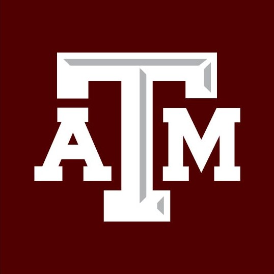

Education

B.S. Industrial and Systems Engineering
Texas A&M University, College Station
Graduation: December 2018
- Certificate: Data Center Operations Engineering
- Certificate: Systems Management
Technical Skills
- C/C++
- Object Oriented Programming/Design
- Intel x86 Assembly
- Computer Architecture
- HTML/CSS/JavaScript
- R
- MATLAB
- Excel: VBA, Pivot Tables
- Microsoft PowerApps
- Microsoft PowerBi
- Microsoft Office Suite
Work Experience
Industrial Management Control Analyst
Tenaris Houston, Texas
January 2018 to Present
- Developed a system with Microsoft PowerApps to document and record CTU (coiled tubing unit) arrivals for job performance measuring.
- Created a power bi linked to the PowerApps platform for weekly, monthly, and yearly tracking of service productivity on CTU servicing.
- Improved utilization reporting from a monthly to a daily basis.
- Presented, analyzed, and validated plant KPI’s on a daily, weekly and monthly basis.
- Predicted electricity consumption trends with regression models in R for budgeting purposes.
- Determined new productivity stanards for the 19/20 budet year.
Manufacturing Engineer Intern
Flex Austin, Texas
May 2018 to August 2018
- Developed a model in VBA to analyze refrigeration manufacturing process time.
- Analyzed production data and identified process bottlenecks.
Research Team Member
AggiE-Challenge College Station, Texas
June 2017 to December 2017
- Analyzed EEG signals for performance measurement reasoning.
- Developed codes in MATLAB for evaluating EEG signals.